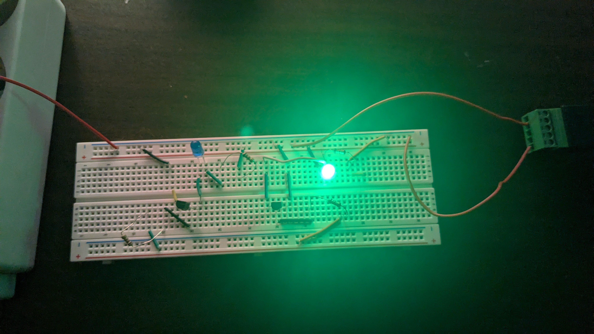
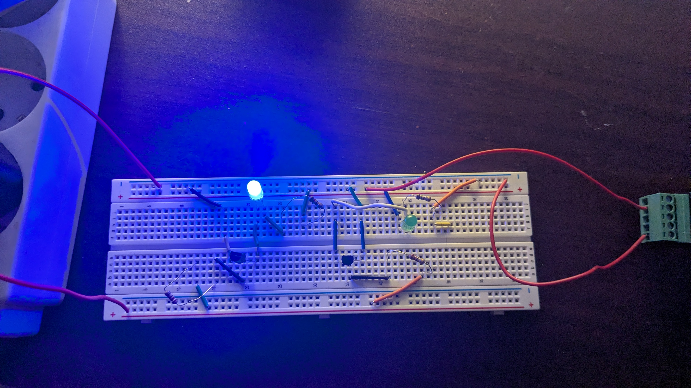

For sometime, I had this idea of working with electronical devices, mainly working on small projects that could be usefull at home, I came across a video of a guy that explains how a computer works on the hardware level in a simplified way. I have some knowledge from highschool about logic gates and electronics, however it was mostly theorical and not that deep. We were more focused on creating schemas using Proteus. Now I am starting my career in Devops and I also studied computer science after high school with a focus more on the software side. I always had this gap between the two worlds of electronics/hardware and software. Lately i got the motivation to start working on this long-term project of making a tiny computer, not directly, but by building all necessary components and then using premade version of the components and work on the next level of abstraction.
In this blog, i will talk about my first buy of components to start working on my journey, and on how to implement NOT Logic gate with a transistor
Initial Buy:
- Breadboards.
- Male wires different lenghts.
- Usb male adapters with screw connections.
- NPN tansistors (2N3904).
- Multimeter ( sadly not delivered yet ).
For now I will keep things short for the first draft of the blog, but this may change in the future and i may give more details to some concepts ( as far as my knowledge goes ).
NOT Logical Gate:
The logical gates are gates that are sort of functions that work in the binary space, basically the input(s) of the function are in {0,1} ( either there is a signal or not ) and gives an output in {0,1}. The Not Logical Gate is the simplest gate, it takes an input and outputs the reverse of its value.
| Input | Output |
|---|---|
| 0 | 1 |
| 1 | 0 |
Now we want to answer the question of how can we make a NOT gate, one way would be by using an NPN transistor with a base wired to to our input.

For the implementation, I tried a circuit in the bread board, where i have a not gate and a buffer, both using the transistor implementation and both bases are linked to the same source, the result is that the existing of source in both bases turn on one led and turn off the other.

